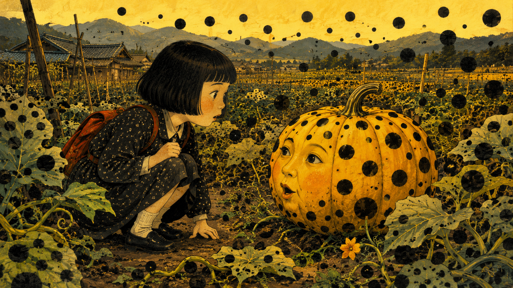
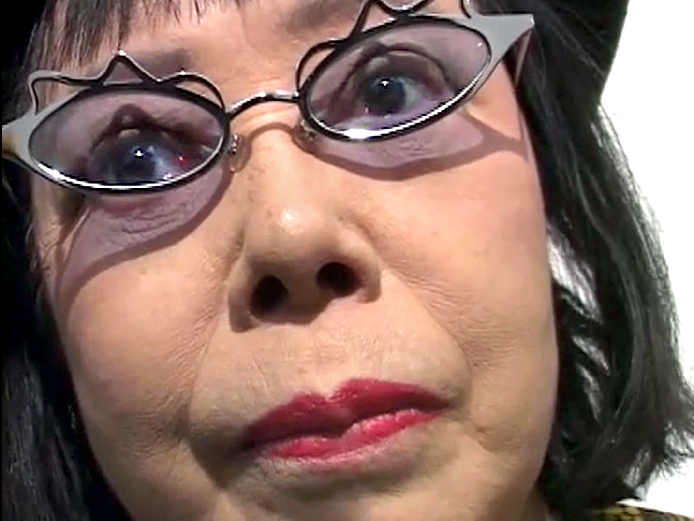
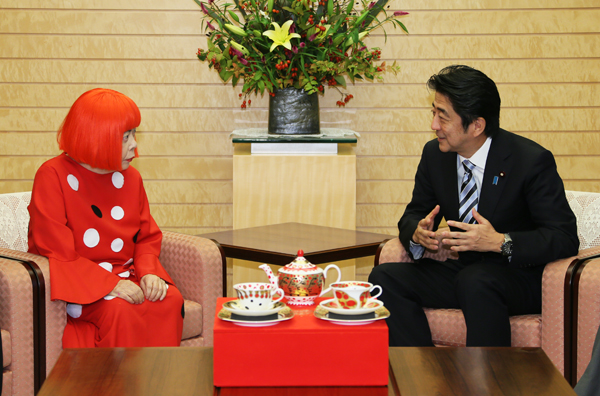

家庭提供了最初的形狀
草間家經營種苗與花卉事業。南瓜不是她後來為了建立品牌才挑選的符號，而是童年生活裡真實、低矮、可以觸摸的植物；藝術語言因此有一個非常具體的故鄉起點。
草間彌生1929年出生於日本長野縣松本市。童年時期便經歷反覆的幻視與幻覺，圓點、網目、花朵與無止境延展的圖像，後來成為她一生最核心的視覺語彙。
1957年赴美，1958年進入紐約藝術圈。她以巨幅「無限網」繪畫、軟雕塑、鏡面裝置、行為藝術與反戰事件迅速建立獨特位置。1965年的第一件「無限鏡屋」更把平面的重複變成觀眾可以走進去的空間。
1973年回到日本後，她同時持續繪畫、雕塑、裝置、小說與詩作。晚年仍長期創作，2009至2021年的《我永遠的靈魂》系列約完成900幅作品。2017年，草間彌生美術館在東京開館。
2026年8月14日，她在東京辭世，享年97歲；消息於8月27日由工作室／官方管道對外公布。她直到生命最後階段仍持續創作。
小學時，她與祖父走進家族的採種場；一顆近似人頭大小的南瓜，在她眼前彷彿活了起來並開始說話。— 依草間彌生自傳回憶整理；事件細節應理解為她對童年感知經驗的敘述

草間家經營種苗與花卉事業。南瓜不是她後來為了建立品牌才挑選的符號，而是童年生活裡真實、低矮、可以觸摸的植物；藝術語言因此有一個非常具體的故鄉起點。
花朵、網目與圓點的增殖常令她感到被吞沒，南瓜卻帶來不同情緒。她形容南瓜樸實、幽默而安定，能為心靈帶來「詩意的平靜」；它像是在混亂中可以反覆返回的安全形象。
圓潤身體既親切又略帶怪誕，外表不完美卻擁有頑強生命力。南瓜因此不只是靜物，更像草間對自己的投射：孤獨、古怪、容易被低估，同時又堅定地佔據空間。
當童年的小南瓜被放大、覆滿圓點並移到海邊、廣場與博物館，它就從只有藝術家能感受到的內在形象，轉變成所有人都能靠近、繞行與共同記住的公共經驗。
南瓜的意義不只是「可愛」。它把家庭產業、祖父陪伴、特殊感知、心靈安定與旺盛生命力疊在同一個形體中——草間彌生將一段極私人的童年記憶，轉化成跨越語言與國界的共同符號。
「我之所以能活到今天，沒有自殺，是因為我把藝術當成抵禦疾病的盾牌。」— 草間彌生，2000 年接受 Damien Hirst 訪談
草間彌生不只是在畫圓點。對她而言，創作不是藝術家浪漫的情懷，而是面對恐懼、維持生命秩序的一種方法。
從童年開始，她便經歷強烈的幻視：桌布上的花朵會蔓延到牆壁、天花板與自己的身體；圓點、網目和閃爍的光反覆增殖，彷彿要吞沒她與現實世界的邊界。
她選擇把這些只有自己看得見的景象畫下來。一遍又一遍地描繪、縫製與排列，將腦海中失去控制的影像轉移到畫布、雕塑與空間。當恐懼成為可以觀看的形式，她也從被幻象支配的人，轉變為決定作品節奏的創作者。
但這不只是「控制」。她以自我消融（self-obliteration）描述另一種狀態：當圓點與網目無限延伸，個人的身體、身份與痛苦也逐漸融入更龐大的宇宙。她一方面試圖逃離幻象，另一方面又主動走進其中，把它建造成所有觀眾都能共同進入的世界。
因此，圓點並不只是可愛的裝飾，無限鏡屋也不只是夢幻的拍照空間。它們記錄了一個人如何長年與恐懼、孤獨和強迫性意象共存。她沒有等到黑暗消失才創作，而是在黑暗仍然存在時，日復一日拿起畫筆。
她最震撼人的地方，不是徹底戰勝了內心的黑暗，而是把原本可能吞噬自己的景象，改造成足以容納全世界的「無限宇宙」。
說明：「如果不是為了藝術，我早就自殺了」是廣為引用的譯句。這裡採用她在訪談中更可核對的直接表述。她曾把繪畫形容為療癒自己的方式，但不宜將其創作簡化為臨床定義下的「藝術治療」，也不宜把精神痛苦浪漫化為天才的來源。
她在 1950、60 年代直接進入紐約前衛現場，以無限網、軟雕塑、裝置與行為藝術建立位置，讓日本藝術家不只是西方潮流的追隨者，而是共同定義當代藝術的人。
圓點、網目、鏡面、南瓜與重複不是單一圖案，而是一套能跨越繪畫、空間、物件、服裝與平面傳播的識別語言，示範藝術概念如何成為完整的設計世界觀。
她讓觀眾走進鏡屋，也讓雕塑進入街道、島嶼與城市地景。這種從觀看物件轉向體驗空間的思考，深刻影響日本的展覽設計、公共藝術與文化觀光。
她證明高度個人的前衛語言，也能透過出版、時尚與品牌合作抵達大眾；同時，她的國際成就為日本女性與非西方藝術家拓開了更可見的位置。


以下圖像為幾何示意，不重製作品照片。點選卡片中的館方連結，可查看作品原始資料與正式影像。
地圖標示具代表性的常設或長期展示地點。點選圓點或下方項目，可查看作品、所在地與官方資料；實際開放狀態仍請在出發前確認。
臺灣觀看提醒：臺北市立美術館典藏《圓點的強迫妄想》，但「典藏」不代表目前常態展出，因此不列為可直接前往觀看的地圖點。查看北美館典藏資料 ↗
海外作品不放入日本地圖，改以文字列出館藏與展示資訊；標示「館藏」不等於每天展出，請以館方最新頁面為準。
The Broad 館藏；館方目前列為開放，須另行預約時段。
Crystal Bridges Museum of American Art 館藏；作品頁目前標示 On View。
Louisiana Museum of Modern Art 館藏；館方目前標示於 South Wing 展出。
National Gallery of Australia 館藏；曾巡迴展出，參觀前請確認當期展場。
QAGOMA 館藏；作品頁目前明確標示未公開展出。
她沒有把幻視只當成私人苦痛，而是把「重複、增殖、自我消滅」轉化成一套完整藝術語言。
在沉浸式展覽成為潮流之前，她已用鏡子、燈光與空間，讓觀看者的身體成為作品的一部分。
從美術館、公共雕塑到時尚合作，她讓前衛藝術擁有極高的大眾辨識度，卻始終維持自己的視覺宇宙。
圓點不會停止。鏡子裡的反射也不會。草間彌生離開了，但她用一生建造的「無限」，仍會在每一位走進作品的人身上繼續延伸。
註：本頁作品視覺為原創幾何示意，不重製作品照片；作品名稱、年代與生平內容依上述官方、館方及新聞來源整理。